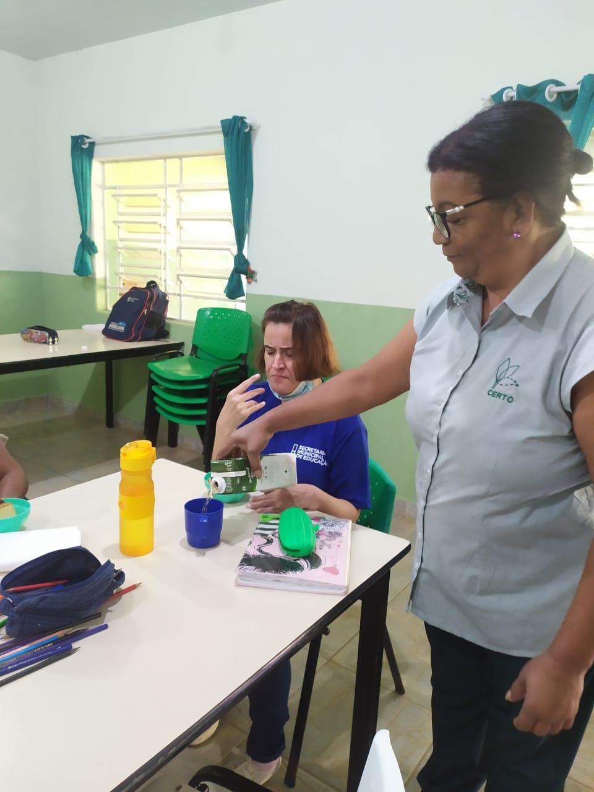
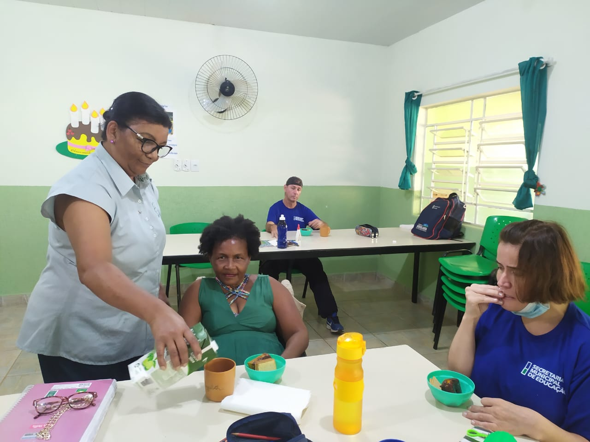
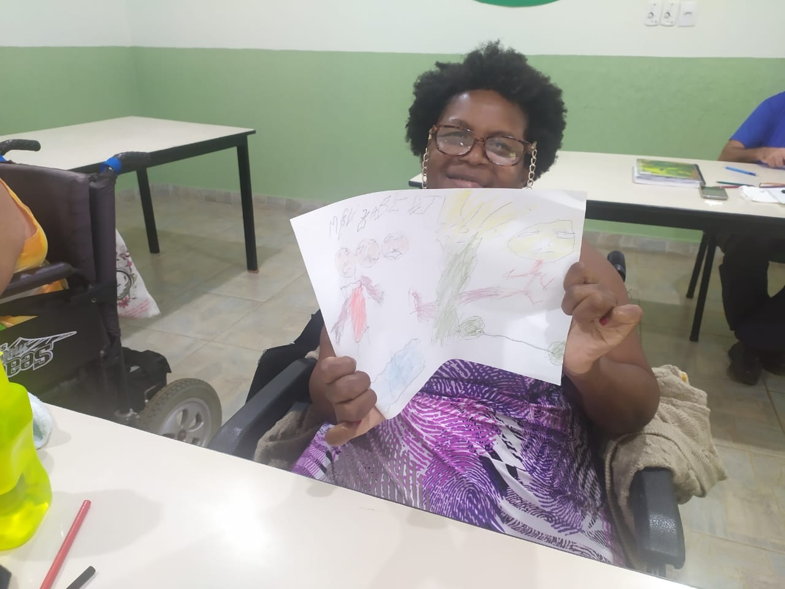
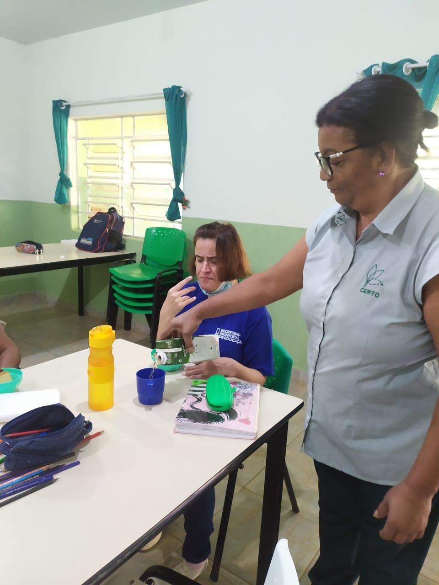
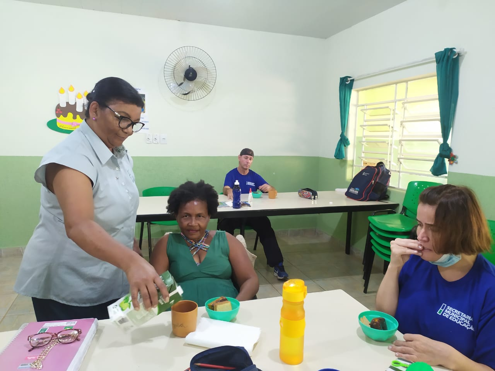
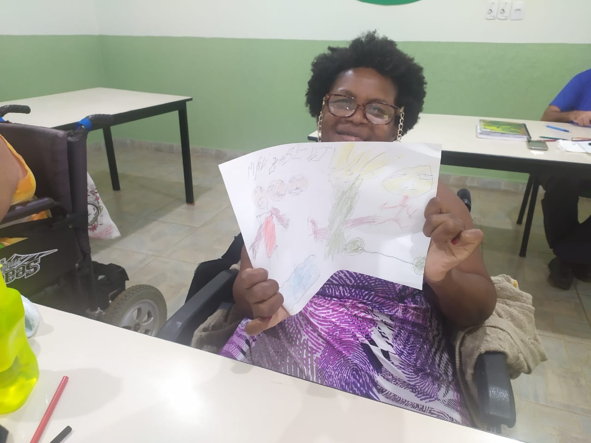
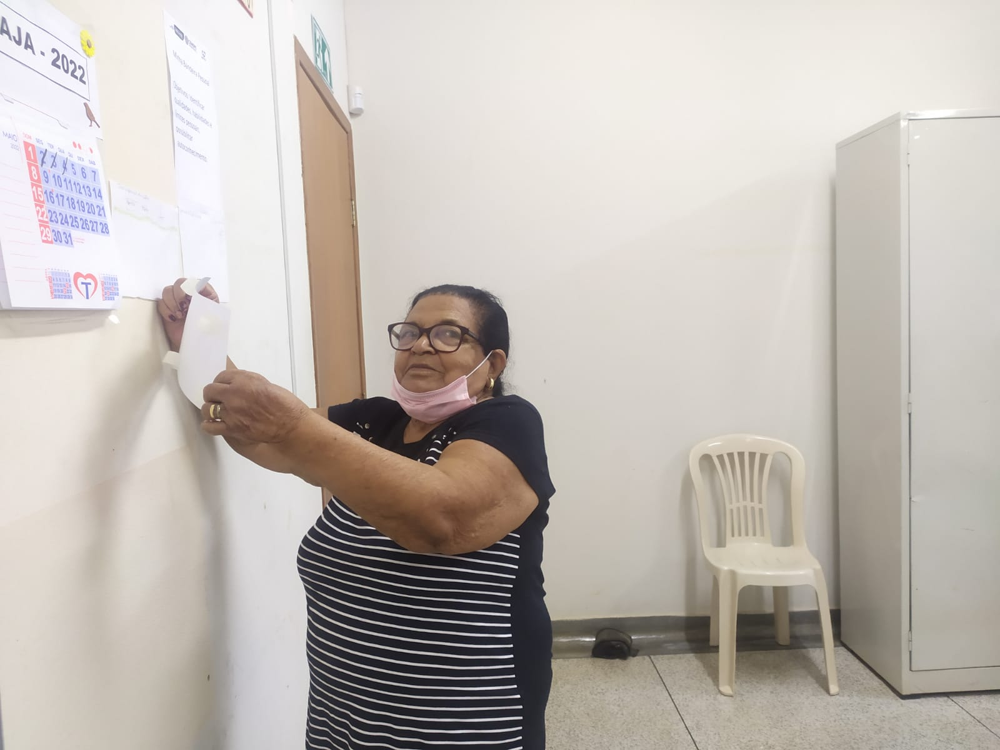
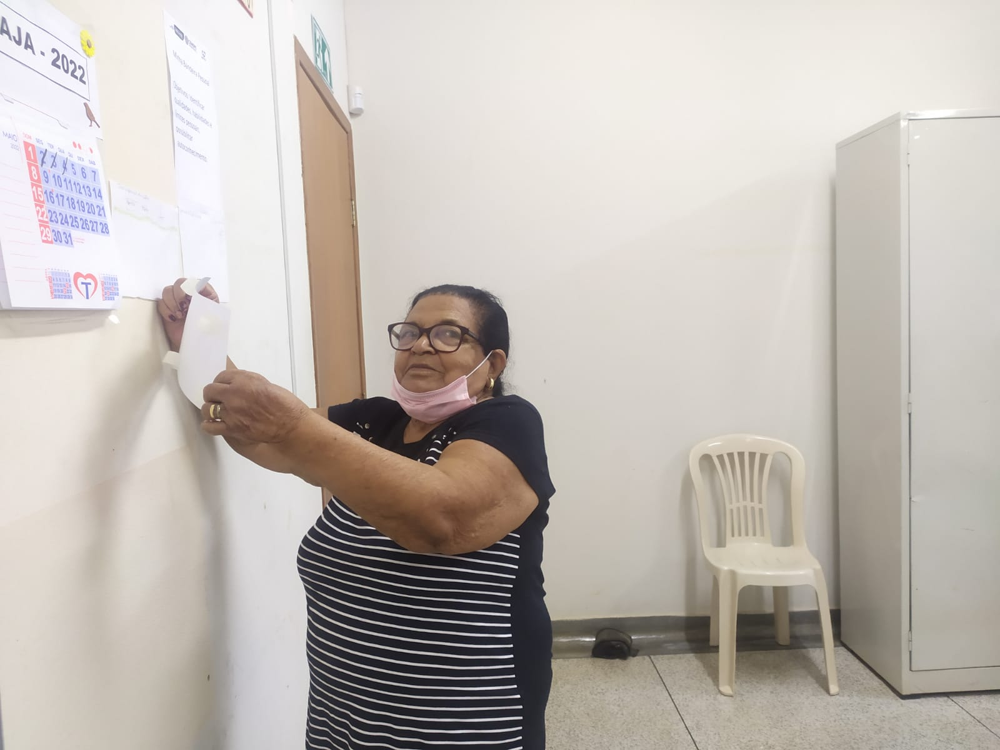

Boas-vindas ao portfólio das turmas do Programa Municipal de Alfabetização de Jovens e Adultos – PMAJA. Sou a professora Paula Luiza rodovalho da Hora, trabalho com Educação de Jovens e Adultos na Rede Municipal de Educação de Uberlândia.
Neste portfolio você encontrará registro fotográfico de algumas das atividades desenvolvidas nas salas de aula do PMAJA, localizadas no Centro de Excelência em Reabilitação e Trabalho Orientado de Uberlândia - CERTO, e no Centro Educacional de Assistência Integrada ao Idoso (Ceai), no bairro Luizote, conhecido como CEAI 3.
O papel do professor como um todo é o de mediador, principalmente o professor no Programa Municipal de Alfabetização de Jovens e Adultos – PMAJA, que num processo dialógico, interage com os alunos e estimula jovens e adultos lhes proporcionando acesso à sala de aula. O professor da EJA deve redirecionar concepções e conceitos em sua organização pedagógica, considerando as especificidades dos alunos.
Os educandos da EJA trazem consigo um legado cultural – conhecimentos construídos a partir do senso comum e um saber popular, não – científico, constituído no cotidiano, em suas relações com o outro e com o meio – os quais devem ser considerados na dialogicidade das práticas educativas.
A utilização do portfólio, como instrumento mediador da aprendizagem, colaborou para o desenvolvimento da autoestima, do aproveitamento e desempenho escolar da turma de alunos. Portanto, a estruturação de um portfólio de aprendizagem teve como objetivo principal documentar as ações e registrar através de fotos as principais vivencias educativas no decorrer de 2022.
Fevereiro- A vida nossa de cada dia
Março-Coperação ampliando nossa participação no mundo
Abril-Agua! um Liquido precioso
Maio-Iniciativa e Responsabilidade
Junho e Julho- O encantamento e a natureza
Agosto- Retratos do brasil
Setembro- SaudeBem estar físico, mental e social
Outubro- Globalização admiravél mundo ou não
Novembro- Reciclagem, ajudando você e a natureza!
 







 
